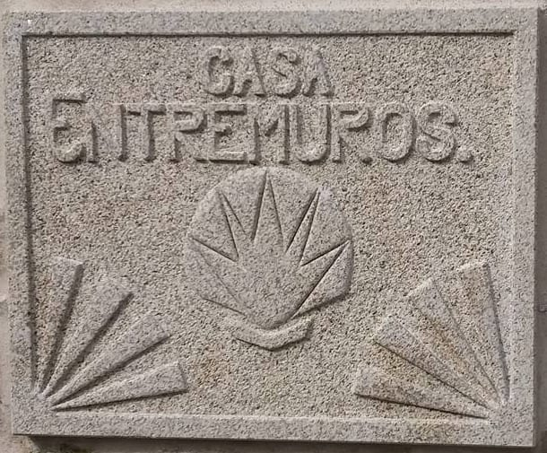

Esta página no está en la mesa
No la encontramos. La casa sigue donde estaba, en Cances Grande, y la mesa también está puesta.
Vuelve a la casa Ver fechas
No la encontramos. La casa sigue donde estaba, en Cances Grande, y la mesa también está puesta.
Vuelve a la casa Ver fechas